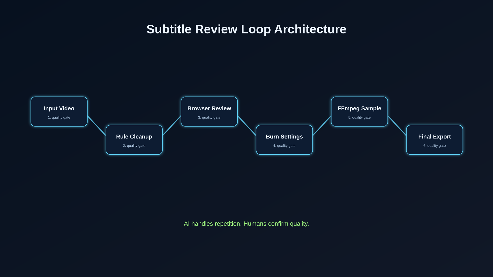

AI 字幕品質工廠
如果你曾經把一支教學影片交給自動轉錄，最後卻花更多時間修錯字、調字幕位置、重燒影片，那這個專案就是為了解決這件事而生。

Project Background
Subtitle Review Loop for Codex 是一套給教學影片與課程錄影使用的字幕檢閱工作流。它把自動轉錄、人工校稿、樣式設定與 FFmpeg 輸出串成可重複執行的流程。
Problem Statement
真正的痛點不是產生 SRT，而是 ASR 會誤判專有名詞，Windows 容易遇到編碼問題，字幕還可能遮住教學平台的按鈕與內容。
Solution
這個專案採用人機協作。機器先處理格式、規則與初稿，人再透過瀏覽器逐句確認。只有完成檢閱後，才進入燒字幕與正式輸出。
Architecture
架構很輕量。前端是一個本機字幕編輯網頁，後端是 Node.js 靜態服務與儲存 API，影片輸出交給 FFmpeg，所有中間成果都保存在 workspace 與 review-output。
Core Feature One
第一階段是字幕校稿。你可以一邊看影片，一邊搜尋 cue、跳轉時間軸、修正錯字，並把規則清理後的字幕變成可確認的正式版本。
Core Feature Two
第二階段是燒錄預覽。系統會讓你調整字幕大小、位置、顏色、字型與外框，並把設定寫成 burn-settings.json，供後續 FFmpeg 使用。
Workflow
完整流程從影片與規則檔開始，產生草稿字幕後進入瀏覽器校稿，再輸出修正後 SRT、燒錄設定、manifest 與樣片，最後才產生正式影片。

Demo
使用者只要執行 npm run open，或在 Windows 直接點擊啟動檔，就能開啟本機服務。可攜版工具包也保留 input 與 output 資料夾，適合交給其他電腦使用。
Technical Highlights
專案特別處理了 Windows UTF-8、MP4 Range Request、大檔案 hard link、字幕樣片先驗證，以及規則檔由使用者定義，不把清理規則硬寫死。
Quality Gate
每一次輸出前，都要檢查字幕同步、畫面遮擋、術語一致、檔案完整與 FFmpeg 參數。這不是一次性工具，而是一個品質閘門。
Roadmap
下一步可以加入閱讀速度警示、重疊 cue 視覺化、雙語字幕、術語表自動比對，以及更完整的一鍵樣片驗證流程。
Summary
Subtitle Review Loop 的核心價值很簡單：讓 AI 負責重複工作，讓人負責判斷品質，最後產出可以放心發布的教學影片字幕。
Ending
這是一個為真實教學現場打造的開源字幕流程。歡迎在 GitHub 使用、改造，或把它接進你的影片製作管線。